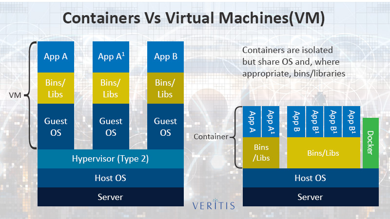

Docker
Table of Contents
- Intro
- Install Docker
- docker image
- TODO Docker File
- Instruction in Docker file
- Example of Docker file
- Instruction in Dockerfile example
- Example Dockerfile of installing Nginx in node:4.4
- Example Scratch Docker File
- Example Dockerfile install jenkins inside centos:7 using
- Example Docker File
- Example Dockerfile install Jenkins using war file in centos:7
- TODO Example with healthcheck
- TODO Docker File [Cmd And Entripoint]
- Combination of Cmd and Entypoint
- Build Docker file
- docker container
- docker volume & bind mounts
- Docker Link
- Docker Compose :
- TODO Docker Network
- Docker Swarm
- Docker DNS RoundRobin
- Docker Stack
- Docker Secrets
- Full App Lifecycle with compose file
- Docker Trouble Shoot
Intro
Before Docker
Onframe servers to PC: PC(mac,) in 90's
Baremetal to Virtual : Virtuallization VM-Ware, Vagrant ,VirtualBox…etc
Datacenters to Cloud : 2010
Host to Containers Docker (Serveless) : 2013
Containers to Kuberentes: 2015 Google
WASM and WASI 2022
- On 2019 Docker founder Solomon Hykes said
- "If WASM+WASI existed in 2008, we wouldn't have needed to created Docker," Hykes wrote in a tweet in March. "That's how important it is. Webassembly on the server is the future of computing."
what is docker :
- tool designed to make easy (create and deploy) app using container
- light weight alternative to VM (no Hypervisor and Guest OS required)
- No pre-allocation of ram
What are Container :
They aren't VM, they are just process (Limited what resource they can access) exit when stop which run on Host OS.They don't have kernel Virtual machine rarelly use all resource (cpus,ram) which are fixed and cann't be changed. Container are isolation in sofware level(not depenendt on OS).Where as VM are isolation in hardware level(isolated from host operating system)
Advantages Container:
The host OS kernel run various apps separatly in containers where each container runs isolated tasks. A app cannot harm the host OS or conflict with other apps running in separate containers.
Disadvanges of Containers:
Containers still do not offer same security and stability that VMs can. Since they share the host’s kernel, they cannot be as isolated as a virtual machine. Consequently, containers are process-level isolated, and one container can affect others by compromising the stability of the kernel.
Container Vs VM
 Container aren't mini-vm's They are just processes Limited to what resources they can access exit when process stop They does not have kernal but run in host OS kernal
docker run -itd --name mypsql_old -v my_psql:/var/lib/postgressql/data postgres:9.6.1 #Volume type docker top mypsql_old #UID PID PPID C STIME TTY TIME CMD #logstash 80258 80235 1 02:46 pts/0 00:00:00 postgres #logstash 80355 80258 0 02:46 ? 00:00:00 postgres: checkpointer process #logstash 80356 80258 0 02:46 ? 00:00:00 postgres: writer process #logstash 80357 80258 0 02:46 ? 00:00:00 postgres: wal writer process #logstash 80358 80258 0 02:46 ? 00:00:00 postgres: autovacuum launcher process #logstash 80359 80258 0 02:46 ? 00:00:00 postgres: stats collector pro ps aux | grep 'postgres' #logstash 80258 0.2 0.2 234724 20456 pts/0 Ss+ 02:46 0:00 postgres #logstash 80355 0.0 0.0 234724 4144 ? Ss 02:46 0:00 postgres: checkpointer process #logstash 80356 0.0 0.0 234724 4144 ? Ss 02:46 0:00 postgres: writer process #logstash 80357 0.0 0.0 234724 4144 ? Ss 02:46 0:00 postgres: wal writer process #logstash 80358 0.0 0.0 235148 6656 ? Ss 02:46 0:00 postgres: autovacuum launcher process #logstash 80359 0.0 0.0 89724 4392 ? Ss 02:46 0:00 postgres: stats collector process
Install Docker
install using digital-ocean or docker Install docker
Linux Installation
Older versions of Docker were called docker, docker.io, or docker-engine. If these are installed, uninstall them:
# Uninstall old version sudo apt-get remove docker docker-engine docker.io containerd run # Dependency sudo apt-get update sudo apt-get -y install apt-transport-https ca-certificates curl software-properties-common # Add Doker's Official GPG Key: curl -fsSL https://download.docker.com/linux/ubuntu/gpg | sudo apt-key add - # Add Docker repo to Linux mint sudo add-apt-repository "deb [arch=amd64] https://download.docker.com/linux/ubuntu $(. /etc/os-release; echo "$UBUNTU_CODENAME") stable" # Install Docker Engine and Docker Compose sudo apt-get update # Install Docker CE and Docker Compose sudo apt-get -y install docker-ce docker-compose # Run docker command ans non-privillgeage sudo usermod -aG docker $USER
When you add user to user gorup : For security some linux like redhat will not work docker or we need use sudo or add
cmd
docker container run #or docker run # older version docker version docker info # docker sytanx #(old) : docker <command> (options) #(new) : docker <command> <sub-command> (options)
Installation in centos
yum install docker -y # Download image from docker hub # satish: images thetheis # create a account dockerhub service docker status service docker start service docker status # list of images in your docker docker images docker search centos docker pull centos docker run -it --name sathish-centos centos # creatre and run in background # # to show the running container # docker ps #or docker container ls # CONTAINER ID IMAGE COMMAND CREATED STATUS PORTS NAMES # d2bf3ff05b9b nginx "nginx -g 'daemon of…" 19 seconds ago Up 17 seconds 80/tcp my_nginX # docker ps -a # to show the running and stoped containers # Enter inside container docker exec -it d2bf3ff05b9b /bin/bash # Enter inside the container docker stop d2bf3ff05b9b # stop container docker rm d2bf3ff05b9b # to remove the container
In windows docker run a tiny Hyper-V
docker image
Intro
What is an Image
- Not a complete OS, No kernel , kernel-module(kernel drivers)
- Img can be Small as one file (your app binary) like a golang static binary
- Img can be bigger like ubuntu distro with apt and Apache,PHP and more installed
Image and Their Layers Discover and Image
Conclusion : Images are made up of : file system and meta data Each layer is uniquelu identified an only stored once on a host This saves storage space on host and transfer time on push/pull Container is just a single read/write layer on top of image
Docker Image cmd's
docker image --help
#Usage: docker image COMMAND
#Manage images
#Commands:
# build Build an image from a Dockerfile
# history Show the history of an image
# import Import the contents from a tarball to create a filesystem image
# inspect Display detailed information on one or more images
# load Load an image from a tar archive or STDIN
# ls List images
# prune Remove unused images
# pull Pull an image or a repository from a registry
# push Push an image or a repository to a registry
# rm Remove one or more images
# save Save one or more images to a tar archive (streamed to STDOUT by default)
# tag Create a tag TARGET_IMAGE that refers to SOURCE_IMAGE
docker image ls # docker images
# REPOSITORY TAG IMAGE ID CREATED SIZE
# mysql latest 8e8c6f8dc9df 4 days ago 546MB
# tomcat 9 29ba6a893a43 4 days ago 647MB
# alpine latest a187dde48cd2 4 weeks ago 5.6MB
# nginx latest 6678c7c2e56c 6 weeks ago 127MB
# httpd latest c5a012f9cf45 7 weeks ago 165MB
# centos latest 470671670cac 3 months ago 237MB
docker search centos # check if image is present in local repo (host os)
docker pull centos # download image from dockerhub to local repo
docker rmi centos:7 # remove centos:7 from local repo
docker image tag --help
docker image tag nginx dankarthik25/nginx2:1.0.1 #docker images
#REPOSITORY TAG IMAGE ID CREATED SIZE
#nginx latest 12766a6745ee 2 weeks ago 142MB
#dankarthik25/nginx2 1.0.1 12766a6745ee 2 weeks ago 142MB
docker rmi centos:7 # delete image
docker image prune
docker history nginx:latest
docker history nginx
#IMAGE CREATED CREATED BY SIZE COMMENT
#12766a6745ee 2 weeks ago /bin/sh -c #(nop) CMD ["nginx" "-g" "daemon… 0B
#<missing> 2 weeks ago /bin/sh -c #(nop) STOPSIGNAL SIGQUIT 0B
#<missing> 2 weeks ago /bin/sh -c #(nop) EXPOSE 80 0B
#<missing> 2 weeks ago /bin/sh -c #(nop) ENTRYPOINT ["/docker-entr… 0B
#<missing> 2 weeks ago /bin/sh -c #(nop) COPY file:09a214a3e07c919a… 4.61kB
#<missing> 2 weeks ago /bin/sh -c #(nop) COPY file:0fd5fca330dcd6a7… 1.04kB
#<missing> 2 weeks ago /bin/sh -c #(nop) COPY file:0b866ff3fc1ef5b0… 1.96kB
#<missing> 2 weeks ago /bin/sh -c #(nop) COPY file:65504f71f5855ca0… 1.2kB
#<missing> 2 weeks ago /bin/sh -c set -x && addgroup --system -… 61.1MB
#<missing> 2 weeks ago /bin/sh -c #(nop) ENV PKG_RELEASE=1~bullseye 0B
#<missing> 2 weeks ago /bin/sh -c #(nop) ENV NJS_VERSION=0.7.2 0B
#<missing> 2 weeks ago /bin/sh -c #(nop) ENV NGINX_VERSION=1.21.6 0B
#<missing> 2 weeks ago /bin/sh -c #(nop) LABEL maintainer=NGINX Do… 0B
#3<missing> 2 weeks ago /bin/sh -c #(nop) CMD ["bash"] 0B
#<missing> 2 weeks ago /bin/sh -c #(nop) ADD file:966d3669b40f5fbae… 80.4MB
docker image inspect nginx # json format meta data
[
{
"Id": "sha256:12766a6745eea133de9fdcd03ff720fa971fdaf21113d4bc72b417c123b15619",
"RepoTags": [
"dankarthik25/nginx2:1.0.1",
"dankarthik25/nginx:1.0.1",
"nginx:latest"
],
"RepoDigests": [
"nginx@sha256:2275af0f20d71b293916f1958f8497f987b8d8fd8113df54635f2a5915002bf1"
],
#docker commit <container-id/name> <user>/<image>:<version> #create a img form running container
docker run -itd --name mynginx -p 80:80 nginx
#CONTAINER ID IMAGE COMMAND CREATED STATUS PORTS NAMES
#df189da34832 nginx "/docker-entrypoint.…" 22 seconds ago Up 21 seconds 0.0.0.0:80->80/tcp, :::80->80/tcp mynginx
docker exec -it mynginx sed -i 's/nginx/Karthik-nginx/g' /usr/share/nginx/html/index.html
curl localhost:80 | grep 'nginx'
<title>Welcome to Karthik-nginx!</title>
<h1>Welcome to Karthik-nginx!</h1>
<p>If you see this page, the Karthik-nginx web server is successfully installed and
<a href="http://Karthik-nginx.org/">Karthik-nginx.org</a>.<br/>
<a href="http://Karthik-nginx.com/">Karthik-nginx.com</a>.</p>
<p><em>Thank you for using Karthik-nginx.</em></p>
docker commit mynginx karthik-nginx
docker images
#REPOSITORY TAG IMAGE ID CREATED SIZE
#karthik-nginx latest 6616cd59a58b 8 seconds ago 142MB
#nginx latest 12766a6745ee 2 weeks ago 142MB
docker images # to see if image is created or not
##########
# push image to docker hub
############
#docker login --username=<your_docker_user_name> # login docker hub
#docker commit <container-id/name> <user>/<image> #create a img form running container
#docker push <docker-user>/<image-name> # push image to docker hub
#docker push dankarthik/testing-node
#docker logout
Create Custom Images or Build Docker file
cat Dockerfile #FROM nginx:latest #WORKDIR /usr/share/nginx/html #COPY index.html index.html # #No need to specity EXPOSE or CMD because they're base-image # #################### # Create image from dockerfile # #################### docker build -t mynginx:latest . # #################### # Build with file name # #################### #├── Dockerfile #├── Dockerfile2 #└── index.html docker build -t hw-nginx:latest . -f Dockerfile2 docker build -f /path/to/a/Dockerfile . docker build -t shykes/myapp .
Push image to dockerhub
cat Dockerfile # FROM nginx:latest # WORKDIR /usr/share/nginx/html # COPY index.html index.html docker image build -t ngin-with-html . docker container run -p80:80 --rm nginx-with-html #docker image tag <c-name/id>:<version> <user-name>/<custom-img>:<version> docker image tag nginx-with-html:latest dankarthik25/nginx-with-html:latest docker commit nginx-with-html:latesh dankarthik/nginx-with-html:latest docker image ls docker push dankarthik25/nginx-with-html #----------------------------------------------------------------- docker build -t testnode . docker container run --rm -p 80:3000 testnode docker tag testnode bretfisher/testing-node #docker login --username=<your_docker_user_name> # login docker hub #docker commit <container-id/name> <user>/<image> #create a img form running container #docker push <docker-user>/<image-name> # push image to docker hub docker push bretfisher/testing-node docker image rm bretfisher/testing-node
image Digests
digest is to check the sha code whihc is used to check if the docker image which is deployed is the actuall one which we have created in jenkins by checking the digiests code
docker image inspect --format "{{.RepoDigests}}" registry.gitlab.com/digival/digiauth/digiauthservice:latest
#[register.gitlab.com/digival/digiauth/digiauthservice@sha256:ec2bdeac324bf8f847b626c28b9866af9aada099f6682cb443c81ec77c6f481e]
Assignment Build Your Docker Own Image
- Build Your Own App
- Dockerfiles are part process workflow and part
- Take existing Node.js(Node 6) app and Dockerize
- make Dockerfile, Build it , Test, Push, Run
- Details in dockerfile-assignment-1/Dockerfile
- Expected result is web site at http:localhost
- Tag and push to your Docker Hub
- Remove your image from local cache, run it again from Hub
#cd /home/jayradhe/Workspace/Devops/udemy-docker-mastery-master/dockerfile-assignment-1 #cat Dockefile FROM node:6-alpine EXPOSE 3000 RUN apk add --update tini # to use alphine package mangaer : isntall tini: 'apk add --update tini' RUN mkdir -p /usr/src/app # Create dir /usr/src/app from WORKDIR /usr/src/app # Node uses "package manager" , need to copy package.json file COPY package.json package.json RUN npm install && npm cache clean # run 'npm install' to install dependencies of file # to keep it clean and small, run 'npm cache clean' COPY .. # need to copy in all files from current directory CMD [ "tini","--", "./bin/www" ] # Need to start container with command 'tini' --node ./bin/www docker build -t testnode . docker container run --rm -p 80:3000 testnode docker tag testnode bretfisher/testing-node docker push bretfisher/testing-node docker image rm bretfisher/testing-node docker container run --rm -p 80:3000 bretfisher/testing-node
TODO Docker File
Docker file is look like shell but it is not Docker file consist of Instruction
Instruction in Docker file
For info visit https://docs.docker.com/engine/reference/builder/
- FROM instruction specifies the base/Parent Image from which you are building image
FROM debian:jessieFROM centos:7
- MAINTAINER (deprecated) instruction set Author field of the docker images
MAINTAINER "karthik"
- LABEL instruction adds metadata to an image
- LABEL is a key-value pair.
- image can have more than one label
LABEL CEO ="apple"LABEL DRT ="stephen"
- ENV instruction add Environment variable to container
ENV JAVA_HOME /opt/java-1.8.0/javaENV PATH /opt/java-1.8.0/java/bin
- RUN instruction builds your application with make.
RUN apt-get update && apt-get install -y <some-package> && rm -rf /var/lib/apt/lists/*
- EXPOSE instruction informs Docker that the container listens on the specified network ports at runtime
EXPOSE 80/udp 443EXPOSE 80/tcp
- WROKDIR instuction to change to workdir
WORKDIR /opt/java-1.8.0
- ----------------------------------------------------------------------------------–—
- COPY instruction copies new files or directories from <src> and adds them to the filesystem of the container at the path <dest>
COPY test.txt /mydir/copy test.txt to mydirCOPY Note* /mydir/COPY image-dir/ /mydir/cpy image-dir dir to my dir dirctoryCOPY test.txt relativeDir/COPY test.txt /absoluteDir/
- ADD instruction copies new files, directories or remote file URLs from <src> and adds them to the filesystem of the image at the path <dest>
ADD src_url /mydir/ADD https://updates.jenkins-ci.org/download/war/2.229/jenkins.war /tmp
- ----------------------------------------------------------------------------------–—
- CMD instruction specifies what command to run when container is created or runing latest-CMD when 1st time container is created.
- ENTRYPOINT instruction allows you to configure a container that will run as an executable.
- cmd docker run <image> will be appended after all elements in an exec form ENTRYPOINT, and will override all elements specified using CMD
- there is comination of using cmd and entrypoint
- ----------------------------------------------------------------------------------–—
- HEALTHCHECK instruction tells Docker how to test a container to check that it is still working. This can detect cases such as a web server that is stuck in an infinite loop and unable to handle new connections, even though the server process is still running.
- HEALTHCHECK two forms:
- HEALTHCHECK [OPTIONS] CMD command (check container health by running a command inside the container)
- HEALTHCHECK NONE (disable any healthcheck inherited from the base image)
- HEALTHCHECK status {starting,healthy, unhealthy}
- When a container has a healthcheck specified, it has a health status in addition to its normal status.
- This status is initially
starting. - Whenever a health check passes, it becomes
healthy(whatever state it was previously in). - After a certain number of consecutive failures, it becomes
unhealthy.
- This status is initially
- When a container has a healthcheck specified, it has a health status in addition to its normal status.
- HEALTHCHECK options
- The options that can appear before CMD are:
–interval=DURATION (default: 30s) # health check is run for every interval as specified here
–timeout=DURATION (default: 30s) # if previous/cuurent health check takes longer than timeout-Duration then the check is considered to have
failed. –retries=N (default: 3) # retries consecutive failures of the health check for the container to be consideredunhealthy–start-period=DURATION (default: 0s) # During container run it may take time to load so it may show unhealthy to avoid it we specify start-period - HEALTHCHECK exit status indicates the health status of the container.
- 0: success - the container is healthy and ready for use
- 1: unhealthy - the container is not working correctly
- 2: reserved - do not use this exit code
- HEALTCHECK Example inside Dockerfile
HEALTHCHECK --interval=5m --timeout=3s CMD curl -f http://localhost:80/ || exit 1
- HEALTHCHECK two forms:
- ----------------------------------------------------------------------------------–—
- ARG is the only instruction that may precede FROM
- ARG instruction defines a variable that users can pass at build-time to the builder with the docker build cmd
- VOLUME instruction creates a mount point with the specified name and marks it as holding externally mounted volumes from native host or other containers
- USER instruction sets the user name (or UID) and optionally the user group (or GID) to use when running the image and for any RUN, CMD and ENTRYPOINT instructions
- ONBUILD instruction adds to the image a trigger instruction to be executed at a later time, when the image is used as the base for another build. The trigger will be executed in the context of the downstream build, as if it had been inserted immediately after the FROM instruction in the downstream Dockerfile
- STOPSIGNAL instruction sets the system call signal that will be sent to the container to exit. This signal can be a valid unsigned number that matches a position in the kernel’s syscall table, for instance 9, or a signal name in the format SIGNAME, for instance SIGKILL.
- SHELL instruction allows the default shell used for the shell form of commands to be overridden.
Example of Docker file
Instruction in Dockerfile example
ARG CODE_VERSION=latest
FROM node:${CODE_VERSION}
MAINTAINER karthik
LABEL "com.example.vendor"="ACME Incorporated"
LABEL com.example.label-with-value="foo"
LABEL version="1.0"
LABEL description="This text illustrates that labe-value can span multiple lines."
LABEL CEO ="apple"
#COPY [--chown=<user>:<group>] <src>... <dest>
#COPY [--chown=<user>:<group>] ["<src>",... "<dest>"]
COPY test.txt relativeDir/
COPY test.txt /absoluteDir/
COPY --chown=55:mygroup files* /somedir/
COPY --chown=bin files* /somedir/
COPY --chown=1 files* /somedir/
COPY --chown=10:11 files* /somedir/
#ADD [--chown=<user>:<group>] <src>... <dest>
#ADD [--chown=<user>:<group>] ["<src>",... "<dest>"]
ADD https://updates.jenkins-ci.org/download/war/2.229/jenkins.war /tmp
RUN /bin/bash -c 'source $HOME/.bashrc; echo $HOME'
RUN ["/bin/bash", "-c", "echo hello"]
RUN ["c:\\windows\\system32\\tasklist.exe"]
RUN apt-key adv --keyserver hkp://pgp.mit.edu:80 --recv-keys 573BFD6B3D8FBC641079A6ABABF5BD827BD9BF62 \
&& echo "deb nginx.org/packages/mainline/debian/ jessie nginx" >> /etc/apt/sources.list \
&& apt-get update \
&& apt-get install --no-install-recommends --no-install-suggests -y \
ca-certificates \
nginx=${NGINX_VERSION} \
nginx-module-xslt \
nginx-module-geoip \
nginx-module-image-filter \
nginx-module-perl \
nginx-module-njs \
gettext-base \
curl \
&& rm -rf /var/lib/apt/lists/*
CMD echo "This is a test." | wc -
CMD ["/usr/bin/wc","--help"]
# cmd :
# 1. msg will be executed while container is executed
# 2. To over-ride the cmd
# 3. To over-ride msg:
# eg: docker run -it sat-dev echo "hi sathish"
CMD ["git", "version"] # show result run container in non-detached mode
# docker run -it <image-name>
CMD ["data"] # Over-ride the last cmd and execute last cmd
EXPOSE 80/tcp
EXPOSE 80/udp
EXPOSE 80 443
ENV MY_NAME="John Doe"
ENV MY_DOG=Rex\ The\ Dog
ENV MY_CAT=fluffy
ENTRYPOINT ["executable", "param1", "param2"]
ENTRYPOINT command param1 param2
ENTRYPOINT ["top", "-b"]
CMD ["-c"]
ENTRYPOINT ["/usr/sbin/apache2ctl", "-D", "FOREGROUND"]
HEALTHCHECK --interval=5m --timeout=3s CMD curl -f http://localhost/ || exit 1
USER <user>[:<group>]
USER <UID>[:<GID>]
STOPSIGNAL signal
VOLUME ["/var/www", "/var/log/apache2", "/etc/apache2"]
SHELL ["powershell", "-command"]
SHELL ["cmd", "/S", "/C"]
Example Dockerfile of installing Nginx in node:4.4
FROM node:4.4
MAINTAINER paas
ENV NGINX_VERSION 1.11.6-1~jessie
RUN apt-key adv --keyserver hkp://pgp.mit.edu:80 --recv-keys 573BFD6B3D8FBC641079A6ABABF5BD827BD9BF62 \
&& echo "deb nginx.org/packages/mainline/debian/ jessie nginx" >> /etc/apt/sources.list \
&& apt-get update \
&& apt-get install --no-install-recommends --no-install-suggests -y \
ca-certificates \
nginx=${NGINX_VERSION} \
nginx-module-xslt \
nginx-module-geoip \
nginx-module-image-filter \
nginx-module-perl \
nginx-module-njs \
gettext-base \
curl \
&& rm -rf /var/lib/apt/lists/*
# Forward request logs to Docker log collector
RUN ln -sf /dev/stdout /var/log/nginx/access.log \
&& ln -sf /dev/stderr /var/log/nginx/error.log
RUN npm install && npm cache clean
# The meaning of && if npm is installed then cache clean npm
RUN npm install ; npm cache clean
# Even if can't install npm cache clean npm
EXPOSE 80 443
CMD ["nginx", "-g", "daemon off;"]
Example Scratch Docker File
# Docker-formate not shell script
# 1
FROM debian:jessie
FROM centos
# 2
MAINTAINER "sathish"
LABEL CEO ="apple"
LABEL DRT ="stephen"
# 3
RUN echo hello \
# comment
world
################################
RUN echo "\
hello\
world"
RUN [ "echo", "$HOME" ]
RUN apt-get update \
&& apt-get install -y <some-package> \
&& rm -rf /var/lib/apt/lists/*
RUN mkdir /opt/demo
RUN mkdir /opt/demo && \
touch /opt/devops && \
yum install git -y \
yum update ;
RUN mkdir /opt/demo && touch /opt/devops && yum install git -y yum update ;
RUN rm -rf /var/lib/apt/lists/* # Remove the cachy after installation
# When you RUN "update" command
# Then a layer containing the lists, which will ALWAYS be pulled by anyone using your image, even though the next command removes those files (so they're not accessible). Ultimately those extra files are just a waste of space and time.
# source : https://stackoverflow.com/questions/61990329/dockerfile-benefits-of-repeated-apt-cache-cleans
RUN # INSTALL packages or unzip....etc
# && make all cmd into one layer
# &&
# 4
WORDIR /opt # change dir
RUN mkdir aws
ADD www.tomcat.tar /opt
# 6
# COPY SRC DEST
COPY /opt/sample.war /tmp
# 7
ADD
# 1) Copy a file from local linux to container
# 2) it download from internet
ADD www.tomcat.tar /opt # download tocat.tar to /opt
# 8
ENV # SET ENVIROmENT Varible
#
# SET ENVIROmENT VARIABLE IN DOCKER FILE
#
ENV JAVA_HOME /opt/java-1.8.0/java
ENV PATH /opt/java-1.8.0/java/bin
RUN export JAVA_HOME
RUN export PATH
ENV NGINX_VERSIN 1.11.10-1~jessie
# NEW features in docker file
VOLUME /opt
# 9)
EXPOSE 8080 # Enable port
EXPOSE 80/tcp
EXPOSE 80/udp
# 10
#CMD
# 11 ENTRYPOINT
# NEW features in docker file
USER ANSIBLE
VOLUME /opt
#
# # set environment in linux
#
#export JAVA_HOME=/usr/lib/jvm/default-java
#export M2_HOME=/opt/maven
#export MAVEN_HOME=/opt/maven
#export PATH=${M2_HOME}/bin:${PATH}
Example Dockerfile install jenkins inside centos:7 using
FROM centos:7
LABEL name="sathish-devopstrainer"
RUN yum -y update && \
yum install java-1.8.0-openjdk -y;
ENV JAVA_HOME /usr/lib/jvm/java-1.8.0-openjdk-1.8.0.242.b08-0.el7_7.x86_64/jre/bin/java
ENV PATH ENV JAVA_HOME /usr/lib/jvm/java-1.8.0-openjdk-1.8.0.242.b08-0.el7_7.x86_64/jre/bin/java/bin:$PATH
RUN export JAVA_HOME
RUN export PATH
WORKDIR /opt
EXPOSE 8081
ADD https://updates.jenkins-ci.org/download/war/2.229/jenkins.war .
RUN java -jar jenkins.war
# SHELL in Dockerfile Instruction is used to set the default shell.
SHELL ["/bin/bash", "-c", "echo hello"]
#ENTRYPOINT ["java", "-jar", "jenkins.war"]
#cat /root/.jenkins/secrets/initalAdminPassword
#
# Install tomcat
#
#ADD http://apachemirror.wuchna.com/tomcat/tomcat-9/v9.0.33/bin/apache-tomcat-9.0.33.tar.gz .
#RUN tar -xvf apache-tomcat-9.0.33.tar.gz
#RUN sh /opt/apache-tomcat-9.0.33/bin/startup.sh
Example Docker File
# FROM # which image should be take
FROM ubuntu
MAINTAINER "sathish-devops"
LABEL CEO ="apple"
# RUN # run linux cmd
RUN apt-get update
RUN apt-get install git -y
#RUN yum install java-1.8.0-openjdk -y
# COPY # copy from local to container
COPY /opt/sofware/jenkins.war /tmp
ADD https://updates.jenkins-ci.org/download/war/2.229/jenkins.war /tmp
# ADD
#1.To copy local to container, and
#2.copy from remote( internet url) to container
ENV # https://examples.javacodegeeks.com/devops/docker/docker-environment-variables-example/
ENV example_env_var=xyz
ENV example_env_var_2=abc
EXPOSE 8080 # port should be enabled
WORKDIR /opt/dev # change dirctory
# cmd :
# 1. msg will be executed while container is executed
# 2. To over-ride the cmd
# 3. To over-ride msg:
# eg: docker run -it sat-dev echo "hi sathish"
CMD ["git", "version"] # show result run container in non-detached mode
# docker run -it <image-name>
CMD ["data"] # Over-ride the last cmd and execute last cmd
ENTRYPOINT
Example Dockerfile install Jenkins using war file in centos:7
FROM centos:7 RUN yum install java-1.8.0-openjdk -y ADD https://updates.jenkins-ci.org/download/war/2.229/jenkins.war /tmp
docker build -t sat-dev .
TODO Example with healthcheck
TODO Docker File [Cmd And Entripoint]
- Difference
- Examin
- Override
- default
Cmd
- 1
- To execute a msg while running inside container
- CmD 'echo hai' or CMD ["ECHO" "Hai"]
- Ex: RUN mkdir /opt/satish
- CmD 'echo floder created'
- To execute a msg while running inside container
-2 cmd can be OVERRIDE while entrpoint can't be override but appended -3 passs ${1} parameter to shell scripts inside docker-file
To execute a msg while running inside container
- 1
docker run -it sathish-own echo directory created docker run -it sathish-own echo sathish folder is created
-2 cmd can be OVERRIDE while entrpoint can't be override but appended
# FileName : dockerfile FROM centos RUN mkdir /opt/azuredevops CMD ["echo", "floder created"]
docker run -it sathish-owm docker run -it sathish-own echo directory created # directory created # cmd is override
# FileName : dockerfile FROM centos RUN mkdir /opt/azuredevops ENTRYPOINT ["echo", "floder created"]
docker run -it sathish-owm docker run -it sathish-own echo sathish is created # we see it is not over-ride but appended # floder created echo sathish is created
-3 passs ${1} parameter to shell scripts inside docker-file -4 To run default process
# cat deployment.sh env= $1 echo "$1 is working in IBM"
FROM centos WORKDIR /opt copy deployment.sh . ENTRYPOINT ["sh","deployment.sh"] CMD ["sathish"] # Sathish is paramenter to ENTRYPOINT
docker build -t sathish-own -f dockerfile_1 . docker run -it sathish-owm karthik # sathish is working in IBM # karthik is working in IBM # sathish has been overwriten
Example 2:
#cat dockerfile2
FROM centos:7
LABEL name="sathish-devopstrainer"
ENV JAVA_HOME /usr/lib/jvm/java-1.8.0-openjdk-1.8.0.242.b08-0.e17_7.x86_64/jre/bbin/java
RUN yum -y update &&\
yum install java-1.8.0-openjdk -y;
RUN export JAVA_HOME
CMD ["java","-version"]
docker build -t sathish-own -f dockerfile2 . docker run -it sathish-owm
Example :
#wget jenkins.war_url #download jenkins.war file
#cat dockerfile2
FROM centos:7
LABEL name="sathish-devopstrainer"
ENV JAVA_HOME /usr/lib/jvm/java-1.8.0-openjdk-1.8.0.242.b08-0.e17_7.x86_64/jre/bbin/java
RUN yum -y update &&\
yum install java-1.8.0-openjdk -y;
RUN export JAVA_HOME
COPY jenkins.war
CMD ["java","-version"]
Combination of Cmd and Entypoint
- Example hello and hi :
FROM centos ENTRYPOINT ["echo" ] CMD [ "hello"]
docker run -it myown # hello docker run -it myown hi # hi
Values can be override we can use combination of entrypoint(Not Overriden contain command ) and cmd(Overriden contain Value or arguments)
- Example : Real time we can use sleep and wait commond.
https://dev.to/gayanhewa/docker-cmd-vs-entrypoint-240l
cat dockerfile #FROM centos #CMD ["sleep","10"] docker build -t myown . docker build -t myown docker build -t myown echo 20 docker build -t myown 10
cat dockerfile #FROM centos #RUN top #ENTRYPOINT ["sleep"] #CMD ["10"] docker build -t myown . docker build -t myown # 10 seconds sys is sleep docker build -t myown 20 # 20 seconds sys is sleep
-3 Change default process
docker ps -a #by default the command is bash # COMMAND # /bin/bash # /bin/bash # /bin/bash
cat dockerfile #FROM centos CMD ["/bin/sh"] docker build -t myown . docker build -t myown docker ps -a #by default the command is bash # COMMAND # /bin/sh # /bin/bash # /bin/bash
Build Docker file
Run a docker file
# # Build the docker image by docker-file # docker build . docker build -f /path/to/a/Dockerfile . docker build -t shykes/myapp . docker build -t shykes/myapp:1.0.2 -t shykes/myapp:latest . docker build -t docker_image_name:version . # -t: tag #-f : docker file path docker build -t sathish:latest . -f dockerfile-dev # . : current dir # # start container # docker run -itd sathish # inside the container # Override Entrypoint from cli docker run ubuntu-sleep --entrypoint sleep2.0 ubuntu-sleeper 10
docker container
container run, exec, ps/ls,stop, rm create and run mysql, apache (httpd) nginx
docker container run -itd -p 3306:3306 --name mysqldb2 -e MYSQL_RANDOM_ROOT_PASSWORD=yes mysql # -t : Allocate a pseduo tty (simulate a real terminal like ssh does) # -i : interactive (keep stdin open even if not attached) keep session open to receive terminal input # -d : detached (run container in background) # p : port configuration docker container logs mysqldb2 | grep -w 'GENERATED ROOT PASSWORD' # TO Get the password # search : "GENERATED ROOT PASSWORD" docker container run -d -p 8080:80 --name webserver httpd docker container run -d -p 8081:80 --name my_engineX nginx # curl localhost:8081 docker ps #CONTAINER ID IMAGE COMMAND CREATED STATUS PORTS NAMES #8010387c87af nginx "/docker-entrypoint.…" 26 seconds ago Up 26 seconds 0.0.0.0:8081->80/tcp, :::8081->80/tcp my_nginx docker exec -it my_nginx /bin/bash cat /usr/share/nginx/html/index.html # docker exec -it my_nginx cat /usr/share/nginx/html/index.html dokcer exec -it 015ffdcb /bin/bash docker container exec -it my_nginx ping new_nginx docker container exec -it new_nginx ping ny_nginx docker container ls # docker ps curl localhost curl localhost:8080 docker container stop 1e15b b9958d d282cc2a09 docker stop b9958d d282cc2a09 docker rm b9958d d282cc2a09 --force # to stop and delete docker rm $(docker ps -a -q) # remove all stopped containers docker rm $(docker ps -a -q) --force # remove all stopped, running containers docker ps docker container exec -it mysql bash
TODO conatainer info : ps/ls,top, stats, inspect, logs
docker container ls # docker ps
docker ps
# CONTAINER ID IMAGE COMMAND CREATED STATUS PORTS NAMES
# 5289647926e3 tomcat:9 "catalina.sh run" 10 seconds ago Up 5 seconds 0.0.0.0:8081->8080/tcp tomcat-dev
# ------------------------------------------------------------------------
#docker container top <container-name> # process list in one container
docker top mypsql_old
#UID PID PPID C STIME TTY TIME CMD
#logstash 80258 80235 1 02:46 pts/0 00:00:00 postgres
#logstash 80355 80258 0 02:46 ? 00:00:00 postgres: checkpointer process
#logstash 80356 80258 0 02:46 ? 00:00:00 postgres: writer process
#logstash 80357 80258 0 02:46 ? 00:00:00 postgres: wal writer process
#logstash 80358 80258 0 02:46 ? 00:00:00 postgres: autovacuum launcher process
#logstash 80359 80258 0 02:46 ? 00:00:00 postgres: stats collector pro
# ----------------------------------------------------------------------------
docker container inspect <container-name> # details of one container config
docker inspect mynginx |grep IPAddress
# "SecondaryIPAddresses": null,
# "IPAddress": "172.17.0.2",
# "IPAddress": "172.17.0.2",
docker inspect mynginx |grep Port
# "PortBindings": {
# "HostPort": "80"
# "PublishAllPorts": false,
# "ExposedPorts": {
# "Ports": {
# "HostPort": "80"
# "HostPort": "80"
# -----------------------------------------------
docker container logs <container-name>
docker container logs mysqldb2
#2021-09-24 18:49:28+00:00 [Note] [Entrypoint]: Entrypoint script for MySQL Server 8.0.26-1debian10 started.
#2021-09-24 18:49:28+00:00 [Note] [Entrypoint]: Switching to dedicated user 'mysql'
#2021-09-24 18:49:28+00:00 [Note] [Entrypoint]: Entrypoint script for MySQL Server 8.0.26-1debian10 started.
#2021-09-24 18:49:28+00:00 [Note] [Entrypoint]: Initializing database files
#2021-09-24T18:49:28.850113Z 0 [System] [MY-013169] [Server] /usr/sbin/mysqld (mysqld 8.0.26) initializing of server in progress as process 43
#2021-09-24T18:49:28.859257Z 1 [System] [MY-013576] [InnoDB] InnoDB initialization has started.
#2021-09-24T18:49:30.866184Z 1 [System] [MY-013577] [InnoDB] InnoDB initialization has ended.
#2021-09-24T18:49:34.768449Z 0 [Warning] [MY-013746] [Server] A deprecated TLS version TLSv1 is enabled for channel mysql_main
#2021-09-24T18:49:34.768933Z 0 [Warning] [MY-013746] [Server] A deprecated TLS version TLSv1.1 is enabled for channel mysql_main
#2021-09-24T18:49:34.885379Z 6 [Warning] [MY-010453] [Server] root@localhost is created with an empty password ! Please consider switching off the --initialize-insecure option.
#2021-09-24 18:49:42+00:00 [Note] [Entrypoint]: Database files initialized
#2021-09-24 18:49:42+00:00 [Note] [Entrypoint]: Starting temporary server
#mysqld will log errors to /var/lib/mysql/ec689de00092.err
#mysqld is running as pid 94
#-----------------------------------------------------------------------------------------------------------
docker container stats # performance stats for all containers
#CONTAINER ID NAME CPU % MEM USAGE / LIMIT MEM % NET I/O BLOCK I/O PIDS
#ec689de00092 mysqldb2 0.60% 380.3MiB / 7.561GiB 4.91% 7kB / 0B 38.6MB / 244MB 37
Port Forwording
docker run -itd --name mynginx -p 80:80 nginx
docker ps
#2e03639c016d nginx "/docker-entrypoint.…" 20 minutes ago Up 20 minutes 0.0.0.0:80->80/tcp, :::80->80/tcp mynginx
ps -aux | grep docker-
#root 4734 0.0 0.0 622788 3908 ? Sl 12:01 0:00 /usr/bin/docker-proxy -proto tcp -host-ip 0.0.0.0 -host-port 80 -container-ip 172.17.0.2 -container-port 80
#root 4742 0.0 0.0 622788 3904 ? Sl 12:01 0:00 /usr/bin/docker-proxy -proto tcp -host-ip :: -host-port 80 -container-ip 172.17.0.2 -container-port 80
docker inspect mynginx |grep IPAddress
# "SecondaryIPAddresses": null,
# "IPAddress": "172.17.0.2",
# "IPAddress": "172.17.0.2",
docker inspect mynginx |grep Port
# "PortBindings": {
# "HostPort": "80"
# "PublishAllPorts": false,
# "ExposedPorts": {
# "Ports": {
# "HostPort": "80"
# "HostPort": "80"
#+Note: nginx is running on 172.17.0.2:80
docker rm $(docker ps -a -q) # remove all stopped containers
docker volume & bind mounts
Why Volume? Container Lifetime, Persistent Data
Overview
- Define Problem of persistent Data
- Learning and using Data Volumes
- Learning and using Bind mounts
- Assignment
Concept with containers:
- Key concept with containers:
- Containers are usually immutalbe(unchange and disposal), ephemeral
- Idea is we can through container and create new one
- "immutable infrastructure" : only re-deploy containers never change
- We not talk of limitation but a desing goal or (best practies)
- We don't change if container is runining
- If config chagnges then we re-deployed
- Trade-off: What happens if new data or unique data is created how to seperate data and binary, lib ?
- This is the ideal scenario, but what about database or unique data ?
- Docker gives us features to ensure these "separation of concerns"
- This unique data is called persistant data
- Docker has two solution : Docker Volume and Bind mounts
- Docker Volumes: make special location outside of container Union File System
- Bind monts: (sharing or mount) or link container path to host path
Persistent Data : Data Volume :
search for mysql docker hub go to docker file we see VOLUME /var/lib/mysql
Means : Any file in /var/lib/mysql : will outlive in container after container is removed.
docker container run -d --name mysql -e MYSQL_ALLOW_EMPTY_PASSWORD=True mysql
docker container ls
docker container inspect mysqldb2 | grep -A 1 Volume
# "VolumeDriver": "",
# "VolumesFrom": null,
# "CapAdd": null,
# "Volumes": {
# "/var/lib/mysql": {}
# --------------------------------------------------------------------
docker container inspect mysql | grep "Mounts" # give volume dir-y
# "Mounts": [
# {
# "Type": "volume",
# "Name": "d5146d92a28c673c1f8936363a230733b0f4fb262238f73462487c2bf1b56913",
# "Source": "/var/lib/docker/volumes/d5146d92a28c673c1f8936363a230733b0f4fb262238f73462487c2bf1b56913/_data",
# "Destination": "/var/lib/mysql",
docker container inspect mysqldb2 | grep \"Source\"
# "Source": "/var/lib/docker/volumes/d5146d92a28c673c1f8936363a230733b0f4fb262238f73462487c2bf1b56913/_data",
docker volume ls
# DRIVER VOLUME NAME
#DRIVER VOLUME NAME
#local 815c70d2cfe6e1912e0c720f9a2be108e1f11d5102e08f7a9835a99b49aa40e1
#local 8004fe5f046c50c50a9e18a4a08b4ad0c36cf3739e1462976d50137b101b1e46
#local a988eed2b162f0d81bb0a9bbcafe653ba3f55b1edc406b88cf20281a939e6a72
#local b37f00018141c2fb6cbd22dc8b8c5bde6d4f0d5e0dc2f302adf36fa9f14e783f
#local d5146d92a28c673c1f8936363a230733b0f4fb262238f73462487c2bf1b56913
#local docker_certificates
#local e86ca460a39c70c618fbb81abb30974115c9870856d8c1e00ee5f21b970991a8
#local my_psql
#local step
Removing container will not remove volume
docker container run -d --name mysql -e MYSQL_ALLOW_EMPTY_PASSWORD=True mysql docker container run -d --name mysql2 -e MYSQL_ALLOW_EMPTY_PASSWORD=True mysql docker volume ls # CONTAINER ID IMAGE COMMAND CREATED STATUS PORTS NAMES # 3cc73e458f42 mysql "docker-entrypoint.s…" 19 seconds ago Up 10 seconds 3306/tcp, 33060/tcp mysql # 4211d14111da mysql "docker-entrypoint.s…" 18 minutes ago Up 17 minutes 3306/tcp, 33060/tcp mysql2 docker container stop mysql docker container stop mysql2 docker container ls # check container are running docker container ls -a # check if container are present in hidden or stoped docker volume ls # check if volume are present or not # DRIVER VOLUME NAME # local 3f0a30709078decf4a17738137f6ab03e36ad04f6ff48e560cc9658ac758363d # local caa37875bf146c52eb7069e5450adc2fd9ff761b16b41a4e49854aed93f9cfad docker container rm mysql mysql2 docker volume ls # check if volume is present even after container is removed # DRIVER VOLUME NAME # local 3f0a30709078decf4a17738137f6ab03e36ad04f6ff48e560cc9658ac758363d # local caa37875bf146c52eb7069e5450adc2fd9ff761b16b41a4e49854aed93f9cfad # Note: So we can say that removing container will not remove the volume # Note: volume are removed manually docker volume rm 3f0a307 caa378 #OR: To remove unused local volumes docker volume prune # Question) Is there a way to same volume for two or more container # Ans) We use name value
Name Volume and using same volume in other container
# Name Volume docker container run -d --name mysql -e MYSQL_ALLOW_EMPTY_PASSWORD=True -v mysql-db:/var/lib/mysql mysql # NAME VOLUME: mysql-db at dir /var/lib docker container rm -f mysql docker volume ls # DRIVER VOLUME NAME # local mysql-db # name volume docker container run -d --name mysql3 -e MYSQL_ALLOW_EMPTY_PASSWORD=True -v mysql-db:/var/lib/mysql mysql # new volume is not created, but re-using same database. docker volume ls # DRIVER VOLUME NAME # local mysql-db # name volume # Create volume in run time docker volume create --help
Persistent Data : Bind Mounting
- Bind Mount
- Maps a host file/directory to a container file/directory
- Basically just two locations pointing to same files
- Again skips UFS, and host files overwite any in container
- Con't use in Dockerfile, must be at container runtime
- Syntax :
- ….run -v /Users/bret/stuff:/path/container (mac/linux)
- ….run -v //C/Users/breff:path/container (window)
- Maps a host file/directory to a container file/directory
# cd dockerfile-sample-2 docker container run -d --name nginx -p 80:80 -v /$(pwd):/usr/share/nginx/html nginx docker container exec -it nginx bash # nginx with no-bind mounts # $#cd /usr/share/nginx/html # ls -al # exit cd dockerfile-sample-2 echo "is it me you're looking for "> testme.txt # RUN localhost:8080
Assignment: Database Upgrade using Docker Volume
You are running postgress mysql version 9.x.x and you want to upgrade to 9.6.1 or doing security fix with-out deleteing data
Q) How to do in container ? Ans)
Database upgrade with containers
- Create a postgres container with named volume psql-data using version 9.6.1
- Use Docker Hub to learn VOLUME path and version needed to run it
- Check logs, stop container
- Create a new postgress container with same named volume using 9.6.2
- Check logs to validate
docker run -d --name mypsql_old -v psql:/var/lib/postgressql/data postgres:9.6.1 docker logs -f mypsql_old # try creating db inside mypsql_old and access same db in newly created container docker ps docker container stop mypsql_old docker run -d --name mypsql_new -v psql:/var/lib/postgressql/data postgres:9.6.2 docker container logs -f mypsql_old LOG: database sys was shutdown #LOG: MultiXact member wraparound #LOG: database system is ready to accept connect #LOG: autovaccum launcher started
Create a database and tables and update tables
root@f77bfead1b87:/# psql -U postgres postgres=# CREATE DATABASE testdb; postgres=# \l # show databses List of databases Name | Owner | Encoding | Collate | Ctype | Access privileges -----------+----------+----------+------------+------------+----------------------- postgres | postgres | UTF8 | en_US.utf8 | en_US.utf8 | template0 | postgres | UTF8 | en_US.utf8 | en_US.utf8 | =c/postgres + | | | | | postgres=CTc/postgres template1 | postgres | UTF8 | en_US.utf8 | en_US.utf8 | =c/postgres + | | | | | postgres=CTc/postgres testdb | postgres | UTF8 | en_US.utf8 | en_US.utf8 | (4 rows) postgres=# \c testdb; #You are now connected to database "testdb" as user "postgres". testdb=# CREATE TABLE COMPANY( testdb(# ID INT PRIMARY KEY NOT NULL, testdb(# NAME TEXT NOT NULL, testdb(# AGE INT NOT NULL, testdb(# ADDRESS CHAR(50), testdb(# SALARY REAL testdb(# ); testdb=# CREATE TABLE DEPARTMENT( testdb(# ID INT PRIMARY KEY NOT NULL, testdb(# DEPT CHAR(50) NOT NULL, testdb(# EMP_ID INT NOT NULL testdb(# ); CREATE TABLE testdb=# \d # show the tables created List of relations Schema | Name | Type | Owner --------+------------+-------+---------- public | company | table | postgres public | department | table | postgres (2 rows) ^ testdb=# INSERT INTO COMPANY (ID,NAME,AGE,ADDRESS,SALARY) VALUES (4, 'Mark', 25, 'Rich-Mond ', 65000.00 ), (5, 'David', 27, 'Texas', 85000.00); testdb=# SELECT * FROM COMPANY; id | name | age | address | salary ----+-------+-----+----------------------------------------------------+-------- 4 | Mark | 25 | Rich-Mond | 65000 5 | David | 27 | Texas | 85000 (2 rows) testdb=#\q exit # exit container
Assignment: Database Upgrade using Docker Bind mount
Use a Jekyll "Static Site Generator " to start a local web server Don't have to be web developer: this is example of bridging the gap between local file access and apps running in containers Source code is in the course repo under bindmount -sample-1
We edit files with editor on our host using navite tool Container detects changes with host files and update web servers start container with docker run -p 80:4000 -v $(pwd):/site/bretfisher/jekyll-serve Refresh our borwser to see changes Change the file in _posts\ and refresh browser to see change
#cd /home/jayradhe/Workspace/Devops/udemy-docker-mastery-master/bindmount-sample-1 docker run -p 80:4000 -v $(pwd):/site bretfisher/jekyll-serve
Bind mount Volume type
local(host) linux and container dir are synchronized local and container are have shared space
#Bind mount
cd /opt
mkdir devops
cd devops
touch sbi.war icic.jar
# docker run -itd -v <local-path(host OS)> : <container-path> <image-name> # Bind mounts
# Bind mounts
docker run -itd -v /opt/devops: /opt/sathish centos # linux
docker run -itd -v //C/User/bret/stuff/devops: /opt/sathish centos # Windows
#Volume type
docker run -d --name mypsql_old -v my_psql:/var/lib/postgressql/data postgres:9.6.1
docker inspect mypsql_old | grep -A 1 \"Volumes\"
"Volumes": {
"/var/lib/postgresql/data": {}
# Example
mkdir test-bindmount
cd test-bindmount
docker run -p 80:4000 -v $(pwd):/site bretfisher/jekyll-serve
Update the database to new version
Consider you are using postgress of old version now you want to upgrade
docker container run -itd --name my_psql_old -v psql1:/var/lib/postgresql/data postgres:9.6.1 docker logs -f my_psql_old docker stop my_psql_old docker run -itd --name my_psql_new -v psql2:/var/lib/postgresql/data postgres:9.6.2
Docker Volume cmd's
docker volume ls docker volume rm docker volume prune #volume in docker run -itd --name mynginx -p 80:80 -v $(pwd):/usr/share/nginx/html nginx
Docker Link
Link : two or more contianers link or communicate each other https://www.youtube.com/watch?v=_uXB9m1i-PU
# To delete used image
docker system prune -a # remove unused images,container
docker run -itd --name mydb -e MYSQL_ROOT_PASSWORD=DEVOPS@12345 mysql:5.7
dokcer exec -it 015ffdcb /bin/bash
mysql -u root -p
#show databases;
#create employ (){.......etc
docker run -itd -itd wordpress --link mydb:mysql -p 83:80 wordpress
Docker Compose :
https://docs.docker.com/compose/compose-file/compose-file-v2/ https://docs.docker.com/compose/compose-file/compose-file-v3/ Docker Compose is used for running multiple containers of same-image/ Same-organaisation.
Docker Compose and Docker Compose.yml file
Docker Compose: Why cofigure relationships between containers Why save our docker container run setting in easy to read file Comprised of 2 separate but related things
Yaml-Formatted file
- version
- defautl : 1 but recommentd min 2
- services: Services consist of individual service(service in swarm)
- <serive-name> services consist of service, each service has unique name
- build
- context:
- dockerfile:
- args:
- label:
- image # Optional if you use build:
- environment
- command : #Optional, replace the default CMD specified by image
- dependon:
- config:
- secrets
- volume
- network
- restart: {always}
- networks
- volumes
- secretes
- configs:
Syntax
version: '3.1' # if no version is specified then v1 is assumed. Recommend v2 minimum
services: # containers. same as docker run
<servicename>: # a friendly name. this is also DNS name inside network
image: # Optional if you use build:
build:
context : . # current directory
dockerfile: #Name of Dockerfile
command: # Optional, replace the default CMD specified by the image
environment: # Optional, same as -e in docker run
secrets:
volumes: # Optional, same as -v in docker run
depends_on: # need to run other servers before running this servier
servicename2:
volumes: # Optional, same as docker volume create
networks: # Optional, same as docker network create
secrets:
Example
wordpress and mysql
# cat /media/jayradhey/myVolume/Tutorial_Docker/Docker-Compose-Example/compose-sample-1/compose-2.yml
# docker-compose -f compose-2.yml up -d
# cat docker-compose.yml
version: '3.3'
services:
db:
image: mysql:5.7
restart: always
environment:
- MYSQL_ROOT_PASSWORD: dev@123
wordpress:
depends_on:
- db
image: wordpress:latest
ports:
- "8000:80"
restart: always
nginx and httpd(apache) docker-compose file
# cd /home/jayradhe/Workspace/Devops/udemy-docker-mastery-master/compose-sample-2
cat docker-compose.yml
version: '3'
services:
proxy:
image: nginx:1.13 # this will use the latest version of 1.13.x
ports:
- '80:80' # expose 80 on host and sent to 80 in container
volumes:
- ./nginx.conf:/etc/nginx/conf.d/default.conf:ro
web:
image: httpd # this will use httpd:latest
docker-compose up
docker-compose ps
docker-compose top
docker-compose down
jekyll with bindmount current dir docker-compose file
#docker run -p 80:4000 -v $(pwd):/site bretfisher/jekyll-serve
# yaml file for sh
version: '2'
services:
jekyll:
image: bretfisher/jekyll-serve
volumes:
- ./:/site # '.' Current Working Directory
ports:
- '80:4000'
Assignment Create compose-file for drupal and postgress
# Assignment: Writing a Compose File
#> Goal: Create a compose config for a local Drupal CMS website
#- This empty directory is where you should create a docker-compose.yml
#- Set the yml version to 2
#- Use the `drupal:8.8.2` image along with the `postgres:12.1` image
#- Use `ports` to expose Drupal on 8080 search default port by
# docker pull drupal:8.8.2
# docker image inspect drupal | grep -A 2 \"Exposedports\"
# gives 80
#- Be sure to setup POSTGRES_PASSWORD on postgres image
#- Walk through Drupal config in browser at http://localhost:8080
#- Tip: Drupal assumes DB is localhost, but it will actually be on the #compose service name you give it
#- Use Docker Hub documentation to figure out the right environment and volume settings
#- Extra Credit: Use volumes to store Drupal unique data
version: '2'
services:
drupal:
image: drupal:8.8.2
ports:
- "8080:80"
volumes:
- drupal-modules:/var/www/html/modules
- drupal-profiles:/var/www/html/profiles
- drupal-sites:/var/www/html/sites
- drupal-themes:/var/www/html/themes
postgres:
image: postgres:12.1
environment:
- POSTGRES_PASSWORD=mypasswd
volumes:
drupal-modules:
drupal-profiles:
drupal-sites:
drupal-themes:
# -----------------------------------
docker-compose up
docker-compose down --help
docker-compose down -v # remove volume (docker by default keep volume ) to remove volume -v
Assignment Create custome drupal Dockerfile and use it in Compose-file
FROM drupal:8.8.2
RUN apt-get update && apt-get install -y git \
&& rm -rf /var/lib/apt/lists/*
WORKDIR /var/www/html/themes
RUN git clone --branch 8.x-3.x --single-branch --depth 1 https://git.drupalcode.org/project/bootstrap.git \
&& chown -R www-data:www-data bootstrap
WORKDIR /var/www/html
####################################################################3
version: '2'
# NOTE: move this answer file up a directory so it'll work
services:
drupal:
image: custom-drupal
build: .
ports:
- "8080:80"
volumes:
- drupal-modules:/var/www/html/modules
- drupal-profiles:/var/www/html/profiles
- drupal-sites:/var/www/html/sites
- drupal-themes:/var/www/html/themes
postgres:
image: postgres:12.1
environment:
- POSTGRES_PASSWORD=mypasswd
volumes:
- drupal-data:/var/lib/postgresql/data
volumes:
drupal-data:
drupal-modules:
drupal-profiles:
drupal-sites:
drupal-themes:
docker compose cmd
Build the project
docker-compose up docker-compose up -d # run in detach mode docker-compose -f <compose-file-name> up -d docker-compose down # stop all container and don't remove volumes, local images docker-compose down --help #Usage: down [options] #Options: # --rmi type Remove images. Type must be one of: # 'all': Remove all images used by any service. # 'local': Remove only images that don't have a # custom tag set by the `image` field. # -v, --volumes Remove named volumes declared in the `volumes` # section of the Compose file and anonymous volumes # attached to containers. # --remove-orphans Remove containers for services not defined in the # Compose file # -t, --timeout TIMEOUT Specify a shutdown timeout in seconds. # (default: 10) docker-compose down -v # delete the volume after compose down docker-compose down --rmi local -v docker-compose ps docker-compose top #docker-compose -h #Commands: # build Build or rebuild services # bundle Generate a Docker bundle from the Compose file # config Validate and view the Compose file # create Create services # down Stop and remove containers, networks, images, and volumes # events Receive real time events from containers # exec Execute a command in a running container # help Get help on a command # images List images # kill Kill containers # logs View output from containers # pause Pause services # port Print the public port for a port binding # ps List containers # pull Pull service images # push Push service images # restart Restart services # rm Remove stopped containers # run Run a one-off command # scale Set number of containers for a service # start Start services # stop Stop services # top Display the running processes # unpause Unpause services # up Create and start containers # version Show the Docker-Compose version information
TODO Docker Network
Intro
Docker Netwrok is abstraction of CNM (Contianer Netwrok Model)
 We have 5 networks model #
We have 5 networks model #

- DRIVER
- bridge

- host #

- none #

- overlay #

- maclane #

- bridge
- Best Practice:is to create a new virtual network for each app:
- network "mywebapp" for mysq; and php/apache containers
- network "myapi" for mongo and nodejs containers (they can talk to each other without configur, they can't talk too other network like mywebapp network
Docker Network cmd's
docker network ls
# NETWORK ID NAME DRIVER SCOPE
# e4412c25e3f8 bridge bridge local
# fc3fb3bc492f dude bridge local
# bde494d3eca8 my_app_net bridge local
# b5c2bb5208eb none null local
# 85464f22d4d4 host host local
# host network is special network,it gain performance by skipping virtual networks but sacrifices security of container model
# docker network:
docker network create -d bridge --subnet 10.1.0.0/16 --ip-range 10.1.5.0/24 --gateway 10.1.0.1 my-netwrok # easter: name of network
# subnet
# gateway
# ip-range
# -d or --driver {bridge,host,none,overlay,maclane}
remove:
# docker network rm networkname
# remove unused networks
docker network prune
# see networkinfo or container info:
# docker network inspect <network-name>
docker network inspect mynetwork
#container:
#docker inspect <containerid>
# docker network create done
# docker network ls done
# dpcker network rm <network-name>
# docker network prune # delete unused network
# docker network inspect continerid
# ---------- Connect Network and Container -----------------
# docker netwrok <netwrork-name> connect <container-name/id 's>
# docker netwrok disconnect <container-name/id 's>
#docker run -itd --name sathish-dev --net <my-network-name> centos:7
Example I
# example: docker network create -d bridge --subnet 10.1.0.0/16 --ip-range 10.1.5.0/24 --gateway 10.1.0.1 easter docker network ls docker network inspect devops docker run -itd --name sathish-dev --net easter --ip 10.1.0.91 centos:7 # set: network: easter and ip-address of container: ip:10.1.0.91 docker ps docker exec -it e8a9ef45586c /bin/bash # own network # docker network create -d bridge --subnet 10.1.0.0/16 --ip-range 10.1.5.0/24 --gateway 10.1.0.1 easter # we can assigen our ip to container # docker run -itd --name sathish-dev --net easter --ip 10.1.0.91 centos:7
Example-II
docker container ls # CONTAINER ID IMAGE COMMAND CREATED STATUS PORTS NAMES # 498f7bfea262 nginx "nginx -g 'daemon of…" 15 seconds ago Up 12 seconds 80/tcp my_engineX # 3928fe27faa0 httpd "httpd-foreground" About a minute ago Up About a minute 0.0.0.0:8080->80/tcp webserver docker network connect 498f7bf 3928fe27 docker network inspect docker network disconnect 498f7bf 3928fe27
Example-III
docker network create --driver overlay mydrupal docekr network ls docker service create --name psql --network mydrupal -e POSTGRESS_PASSWORD=mypass postgres docker service ls psql replicated ps psql docker container ls docker service create --name drupal --network mydrupal -p 80:80 drupal docker service ls watch docker ls # linux re-run docker service ps drupal # see -where drupal service is running : let be node2 # How to make talk to each other
Example with Multiple Node Connecting overlay Network
python(front-end) <====>redis(front-end) <=====>worker(.net) <====>psql(db,back-end)<======>Node.js
#cd dockersamples/examplevotingapp_vote docker node ls docker ps -a docker services ls docker network create -d overlay backend docker network create -d overlay frontend docker service create --name vote -p 80:80 --network frontend --replica 2 dockersamples/examplevottingvotle:before docker service create --name redis -p 80:80 --network frontend --replica 2 dockersamples/examplevottingvotle:before docker service create --name worker -p 80:80 --network frontend --replica 2 dockersamples/examplevottingvotle:before docker service create --name worker -p 80:80 --network backend --replica 2 dockersamples/examplevottingvotle:before docker service create --name psql -p 80:80 --network backend --replica 2 dockersamples/examplevottingvotle:before docker service create --name Nodejs -p 80:80 --network backend --replica 2 dockersamples/examplevottingvotle:before
Example -IV
docker container run -itd -p 8080:80 --name webserver httpd # Port Forwarding
# ether net is lisening to port 8080 and rouths through webserver and go to httpd port 80
# 8080 : is host OS port and 80 is container prot
docker container ls -a
# CONTAINER ID IMAGE COMMAND #CREATED STATUS PORTS NAMES
# 287e5a78867a httpd "httpd-foreground" 8 seconds ago Up 3 seconds 0.0.0.0:8080->80/tcp webserver
docker container port webserver
# 80/tcp -> 0.0.0.0:8080
# Ip Address of Container and host Ip is not same
docker container inspect --format '{{.NetworkSettings.IPAddress}}' webserver
# 172.17.0.2 Container Ip Address
ifconfig en0
# flags=4163<UP,BROADCAST,RUNNING,MULTICAST> mtu 1500
# inet 192.168.0.105 netmask 255.255.255.0 broadcast 192.168.0.255
# >> 192.168.0.105 Ip address of host ethernet
Example - V
docker network create my_app_net docker network ls docker network inspect my_app_net # create container with given network docker container run -itd --name new_nginx --network my_app_net nginx docker container run -itd --name my_nginX -p nginx docker network inspect my_app_network docker container ls # CONTAINER ID IMAGE COMMAND CREATED STATUS PORTS NAMES # d2bf3ff05b9b nginx "nginx -g 'daemon of…" 19 seconds ago Up 17 seconds 80/tcp my_nginX # b98f30cc34bd nginx "nginx -g 'daemon of…" About a minute ago Created new_nginx # 3928fe27faa0 httpd "httpd-foreground" 19 minutes ago Up 19 minutes 0.0.0.0:8080->80/tcp webserver
Docker Swarm
Intro
Docker Swarm : To mainitain multiple containers in cluster in more than 1 node
- Advantage is
- Create Clusters :
- High Avaliablity: Even if one server is not working
- load balancing
- Port Forwording
Cluter maintain in form of services (containers or services)
Steps for Creating Swarm
- Change Hostname when on aws
- hostname swarmmaster
- hostname swarmwork1
- hostname swarmworker2
- Create a swarm
- Join container to swarm
- Go to worker and run join command which is copied in master node
- docker swarm join
- Go to worker and run join command which is copied in master node
- Join container to swarm
docker swarm
Initaizing, join,leave, change form worker node to manager node
docker swarm --help #Commands: # ca Display and rotate the root CA # init Initialize a swarm # join Join a swarm as a node and/or manager # join-token Manage join tokens # leave Leave the swarm # unlock Unlock swarm # unlock-key Manage the unlock key # update Update the swarm #go-inside master server # How to create a clustser docker swarm init --advertise-addr 18.220.116.100 #it gives the folloing join --token #example: docker swarm join --token SWMTKN-1-51n0oal47mvwoyh8l3d2bn8naogqp8xs62wyvh2x6od6f89e8p-efi7qazxaie80f2mepov21d34 18.220.116.100:2377 # step2: go to workers and run join command which is copied in master node # join nodes: docker swarm join --token SWMTKN-1-51n0oal47mvwoyh8l3d2bn8naogqp8xs62wyvh2x6od6f89e8p-efi7qazxaie80f2mepov21d34 18.220.116.100:2377 # step3: node list added in the cluster : docker node ls # step4: if you remove node from cluster docker swarm leave # Inside the node docker docker swarm leave --force # Leader # ----------------------------------------------------------------------- docker swarm join-token worker # #docker swarm join --token SWMTKN-1-3pu6hszjas19xyp7ghgosyx9k8atbfcr8p2is99znpy26u2lkl-1awxwuwd3z9j1z3puu7rcgdbx 172.17.0.2:2377 docker swarm join-token manager # docker swarm join --token SWMTKN-1-3pu6hszjas19xyp7ghgosyx9k8atbfcr8p2is99znpy26u2lkl-7p73s1dx5in4tatdymyhg9hu2 172.17.0.2:2377
Docker node
docker node --help #Commands: # demote Demote one or more nodes from manager in the swarm # inspect Display detailed information on one or more nodes # ls List nodes in the swarm # promote Promote one or more nodes to manager in the swarm # ps List tasks running on one or more nodes, defaults to current node # rm Remove one or more nodes from the swarm # update Update a node drain or activa the node docker node ls #ID HOSTNAME STATUS AVAILABILITY MANAGER STATUS ENGINE VERSION #yg550ettvsjn6g6t840iaiwgb * swarm-test-01 Ready Active Leader 20.10.2 #2lm9w9kbepgvkzkkeyku40e65 swarm-test-02 Ready Active Reachable 20.10.2 #hc0pu7ntc7s4uvj4pv7z7pz15 swarm-test-03 Ready Active Reachable 20.10.2 #n41b2cijmhifxxvz56vwrs12q swarm-test-04 Ready Active 20.10.2 # #To Drain or Stop a server(container) : # # docker node update --avalibility drain <hostaname> docker node update --avalibility drain worker1 docker node update --avalibility active worker1 # # To activae a server(container): # # docker node update --avalibility active hostaname # To show which node is drain/active docker node ls # to leave the swarm cluster docker leave <hostname> docker swarm leave # for leader to leave swarm docker swarm leave --force
Docker service
Create a cluster
#What is docker service ? #is a cluster(replica) of-container(same docker-image) # containers or service :docker run -it --name jenkins jenkins used to manage docker service --help #Commands: # create Create a new service # inspect Display detailed information on one or more services # logs Fetch the logs of a service or task # ls List services # ps List the tasks of one or more services # rm Remove one or more services # rollback Revert changes to a service's configuration # scale Scale one or multiple replicated services # update Update a service # step5: create service (container running) : if you want to bring up 5 service at a time docker service create --replicas 5 -p 80:80 --name web nginx # or docker service create -p 83:80 --name nginx-dev nginx #step6: if you wonna check service is running or not docker service ls #ID NAME MODE REPLICAS IMAGE #c8wgl7q4ndfd frontend replicated 5/5 nginx:alpine #dmu1ept4cxcf redis replicated 3/3 redis:3.0.6 #iwe3278osahj mongo global 7/7 mongo:3.3 #hh08h9uu8uwr job replicated-job 1/1 (3/5 completed) nginx:latest # step7: where this is running # see in which node the container(service) is running docker service ps redis #ID NAME IMAGE NODE DESIRED STATE CURRENT STATE ERROR PORTS #0qihejybwf1x redis.1 redis:3.0.5 manager1 Running Running 8 seconds #bk658fpbex0d redis.2 redis:3.0.5 worker2 Running Running 9 seconds #5ls5s5fldaqg redis.3 redis:3.0.5 worker1 Running Running 9 seconds #8ryt076polmc redis.4 redis:3.0.5 worker1 Running Running 9 seconds #1x0v8yomsncd redis.5 redis:3.0.5 manager1 Running Running 8 seconds #71v7je3el7rr redis.6 redis:3.0.5 worker2 Running Running 9 seconds #4l3zm9b7tfr7 redis.7 redis:3.0.5 worker2 Running Running 9 seconds #9tfpyixiy2i7 redis.8 redis:3.0.5 worker1 Running Running 9 seconds #3w1wu13yupln redis.9 redis:3.0.5 manager1 Running Running 8 seconds #8eaxrb2fqpbn redis.10 redis:3.0.5 manager1 Running Running 8 seconds # step8: scale up #docker service scale <servicename>=20 docker service scale nginx=20 # To know how may scale in server we using docker service ls #ID NAME MODE REPLICAS IMAGE #c8wgl7q4ndfd frontend replicated 5/5 nginx:alpine #dmu1ept4cxcf redis replicated 20/20 redis:3.0.6 #iwe3278osahj mongo global 7/7 mongo:3.3 #hh08h9uu8uwr job replicated-job 1/1 (3/5 completed) nginx:latest # To which node how many servers are running docker service ps nginx # step9: scale down # docker service scale <servicename>=5 docker service scale nginx=5 # step 10: if you wonna remove service docker service rm servicename
TODO Docker Service Update
If you want to update you db(mysql,mongodb,postgres) to new version then we need to create new db and copy db-data to new db by roll-replacing update
Include rollback and healthcheck options
# update image version docker servicec update --image myapp:1.2.1 < service-name> # update evnironment varialbe and remove port docker service update --env-add NODE_ENV=production --publish-rm 8080 # update replicas docker servce web=8 api=6
Docker DNS RoundRobin
Docker Network DNS
- How DNS is key to easy inter-container comms
- How it works by default with custom networks
- How to use –link enable
The containers ip address is not same because containers are continously creatred and distroyed so we need other naming system so that they can connect regardless of ip address. The solution is using DNS naming
Different containers has same DNS is know as Docker DNS Roundrobin Ex: google.com
Roundrobin mesh con
- Stateless load balancer: layer at OSI 3(TCP), not layer 4(DNS)
docker network create my_app_net docker container run -itd --name new_nginx --network my_app_net nginx docker container run -itd --name my_nginX --network my_app_net nginx docker network inspect my_app_network docker container ls # CONTAINER ID IMAGE COMMAND CREATED STATUS PORTS NAMES # d2bf3ff05b9b nginx "nginx -g 'daemon of…" 19 seconds ago Up 17 seconds 80/tcp my_nginX # b98f30cc34bd nginx "nginx -g 'daemon of…" About a minute ago Created new_nginx # 3928fe27faa0 httpd "httpd-foreground" 19 minutes ago Up 19 minutes 0.0.0.0:8080->80/tcp webserver docker container exec -it my_nginx ping new_nginx docker container exec -it new_nginx pring ny_nginx docker network ls # Doesn't DNS
Conclusion
- Containers shouldn't rely on IP's for inter-communication
- DNS for friendly names is built-in if you use custome networks
- If You're using custome networks Then it gets way easier with docker compose in future
TODO Assignment :DNS RoundRobin Test
Requirement:
- Know how to use -it to get shell in container
- Basics of Linux distribution like ubuntu and centos
- How to runcontainer
- Understand DNS Records
- What is DNS RoundRobin ?
- A same DNS or one DNS Server is having one or more aliase servers
- Ex: google : Google has 1000 or millons of servers but it has one DNS which is called DNS RoundRobin
- A same DNS or one DNS Server is having one or more aliase servers
- Assignment
- Since Docker Engin 1.11 we can have multiple container on a created network respond to same DNS address
Steps :
- Create a new virtaul network (default bridge)
- Create two container from elasticsearch:2 image
- Research and use -network-alias serach when creating them to give them an additional DNS
- Run alpine nslookup search with –net to see the two containers list for the same DNS name
- Run centos curl -s search:9200 with –net multiple times untill you see both "name" fields show
docker network create dude docker container -itd --net dude --net-alias serach elasticsearch:2 # --net-alias or # --network-alias both are same
Docker Stack
Intro
- In 1.13 Docker adds a new layer of abstraction to swarm called stack
- Stacks accept Compose files
- which consist of declarative definition for services, networks, and volumes
- its swarm job to create them
- include
secrete
- We use
docker stack deployrather then docker service create - Stacks manages all those obj for us, -including overlay netwok per stack, volume and inter-connection, services
- New
deploy: key in Compose file. Can't do build:- who many replicas are needed
- what we can't in stack is we
can't buildas docker-compose.
- Compose is created to
build multi servicewhile ignoringdeployand - Swarm is created to
deploywhile ignoringbuild - docker-compose cli not need in docker swarm NOTE: Compose is not the production tool but for developer and sys-admin tool. Swarm is production,deployment tool.
Difference btw compose and stack file
In stack we will not see build option
In stack as new function called deploy which tells about
deploy:
- replicas
- updateconfig {parallelism, delay}
- restartpolicy {condition[on-failure], delay,maxattempts,window}
- placement: {constraints [node.role]==manager}
- mode
- labels [APP=VOTING]
docker stack deploy -c <compose-file-path> <stack-name> # c:compose Usage: docker stack [OPTIONS] COMMAND Options: --orchestrator string Orchestrator to use (swarm|kubernetes|all) #Commands: # deploy Deploy a new stack or update an existing stack # ls List stacks # ps List the tasks in the stack # rm Remove one or more stacks # services List the services in the stack docker stack deploy -c voting_app.yml vote_app docker stack ls docker stack ps voteapp docker stack services voteapp # Update of stack: #Q) if new-update in voting app is done then How to update stack #A) git compose-file(.yml) and delpoy again without stop or removing stack vim voting_app.yml docker stack deploy -c voting_app.yml voteapp
Docker stack componets overview
https://docs.docker.com/compose/compose-file/compose-file-v3/
- docker stack.yml file
- version
- 3 # min 3 or higher
- services : Services consist of individual service(service in swarm)
- Each service has unique <service-name> and each service consist of
- image
- environment
- secrets : min yml version : 3.1
- ports
- deploy
- mode {replicated(specified number of containers),global(exactly one container per swarm node)}
- relicas
- label
- placement
- constraints
- resources
- limits
- cups
- memory
- reservations:
- cups:
- memory:
- restartpolicy
- condition{none,on-failure,any }
- delay
- maxattemps
- window
- updateconfig
- parallelism
- delay
- rollbackconfig:
- parallelism
- delay
- healthcheck:
- test: ["CMD", "curl", "-f", "http://localhost"]
- interval: 1m30s
- timeout: 10s
- retries: 3
- startperiod: 40s
- links:
- volume
- type: {volume,bind}
- source: mydata,./currdir
- target: /opt/app/static
- networks
- dependson
- link
- stopgraceperiod:
- volumes
- networks
- <networkname>
- networkmode: {bridge,host,none,overlay}
- secrets # min yml version : 3.1
- <name of secret>
- external: true # if secret is already created then use this
- file : *.txt # if need to create new user/pwd using file
Examples
wordpress and mysql
#stack:
---
version: '3'
services:
mydb:
image: mysql:5
environment:
MYSQL_ROOT_PASSWORD: DEV@123
myword:
image: wordpress
ports:
- 83:80
deploy: # main diff btw compose and stack :
replicas: 3 # scale
placement: # at which place should it run
constraints:
- node.hostname == stackslave
resources: # hardware resources
limits:
cpus: "0.01"
memory: 100M
Jenkins
########################################################################
#Example :stack2:
version: '3'
services:
myjenkins:
image: jenkins
ports:
- 8083:8080
deploy:
replicas: 2
placement:
constraints:
- node.hostname == stackmaster
resources:
limits:
cpus: "0.5"
memory: 100M
jenkins with nginx
#stack3:
---
version: '3'
services:
myjenkins:
image: jenkins
ports:
- 8083:8080
deploy:
replicas: 2
placement:
constraints:
- node.hostname == stackmaster
mynginx:
image: nginx
ports:
- 83:80
deploy:
replicas: 2
placement:
constraints:
- node.hostname == stackslave
jenkins with nginx and stack master and slave
#stack4:
---
version: '3'
services:
myjenkins:
image: jenkins
ports:
- 8083:8080
deploy:
replicas: 2
placement:
constraints:
- node.hostname == stackmaster
mynginx:
image: nginx
ports:
- 83:80
deploy:
replicas: 2
placement:
constraints:
- node.hostname == stackslave
updateconfig
#stack5:
version: '3'
services:
devserver:
image: jenkins
ports:
- 8082:8080
deploy:
mode: replicated
replicas: 2
labels: [APP-VOTING]
placement:
constraints: [node.role == manager]
update_config:
parallelism: 2
delay: 10s # when container started but in delay so we add delay
restart_policy:
condtion: on-faliure
delay: 10s
max_attempts: 3
windos: 120 s
resources:
limits:
cpus: "0.5"
memory: 100M
docker stack cmd
docker stack deploy -c <stack-file.yml> <stack-name>
# # RUN STACK FILE
# docker stack deploy -c name.yml mystack
# To inspect which node the stack is running
docker stack ps mystack
docker stack rm mystack # remove the stack
docker stack ls # Name and No.of services running
docker stack ps <service-name> # task or serive(name,id), image, node, desire state(running,stopped...), port
docker stack serivces voteapp # service (id, name) mode(replicated), replicas, images
Usage: docker stack [OPTIONS] COMMAND
Options:
--orchestrator string Orchestrator to use (swarm|kubernetes|all)
#Commands:
# deploy Deploy a new stack or update an existing stack
# ls List stacks
# ps List the tasks in the stack
# rm Remove one or more stacks
# services List the services in the stack
Docker Secrets
Intro
- Added in Docker 1.13 uses Swarm Raft DB in encript on disk
- Only stored on disk on Manager Nodes
- Default is Managers and Workers "control plane" in TLS + Mutal Auth
- Secrets are first stored in Swarm, then assigned Service('s)
- They look like files in contianer but are actually in-memory File System
- Locally development docker-compose can be use file-based secrets, but not sure
Note we can see userid and password by runing cat /run/secrets/<secret-user_id |password|secret-alias>
secret cmd
$ docker secret # Commands: # create Create a secret from a file or STDIN as content # inspect Display detailed information on one or more secrets # ls List secrets # rm Remove one or more secrets echo "dan_psql" | dokcer secret create psql_user - echo "myDd_passwrd" | dokcer secret create psql_password - # or create file psql_user, psql_password which contain id and password cat psql_user.txt psql_password.txt #dan_psql #myDd_passwrd docker secret create psql_user psql_user.txt docker secrete ls docker secrete inspect psql_user # Don't show user_id # Pass secrets to db docker service create --name psql \ --secret psql_user \ --secret psql_pass \ -e POSTGRES_USER_FILE=/run/secret/psql_user \ -e POSTGRES_PASSWORD_FILE=/run/secret/psql_pass postgress # to see password docker exec -it psql /bin/bash # $cat /run/secret/psql_user(or)password # show user name and password docker service ps psql # id docker logs psql.1.<id> #from above docker service update --secret-rm #to remove the secret form container then container or service will fail and re-deploy them #TODO : How to update database password using secret
Example Stack with Secret
stack compose file for postgress db with secret passed though file
# cd /media/jayradhey/New Volume1/Tutorial_Docker/secrets-sample-2
#├── docker-compose.yml
#├── psql_password.txt
#└── psql_user.txt
version: "3.1"
services:
psql:
image: postgres
secrets:
- psql_user
- psql_password
environment:
POSTGRES_PASSWORD_FILE: /run/secrets/psql_password
POSTGRES_USER_FILE: /run/secrets/psql_user
secrets:
psql_user:
file: ./psql_user.txt
psql_password:
file: ./psql_password.txt
###############################################
docker stack deploy -c docker-compose.yml mydb
docker secret ls
docker secret rm mydb # remove the secret also
stack compose file for drupal and postgress db with secret passed externally
version: '3.1'
services:
drupal:
image: drupal:8.2
ports:
- "8080:80"
volumes:
- drupal-modules:/var/www/html/modules
- drupal-profiles:/var/www/html/profiles
- drupal-sites:/var/www/html/sites
- drupal-themes:/var/www/html/themes
postgres:
image: postgres:12.1
environment:
- POSTGRES_PASSWORD_FILE=/run/secrets/psql-pw
secrets:
- psql-pw
volumes:
- drupal-data:/var/lib/postgresql/data
volumes:
drupal-data:
drupal-modules:
drupal-profiles:
drupal-sites:
drupal-themes:
secrets:
psql-pw:
external: true
#############################################
echo "myDd_passwrd" | dokcer secret create psql_pw -
docker stack deploy -c docker-compose.yml drupal
Full App Lifecycle with compose file
A single compose can solve mulitple serveice deploy easy But we need different compose file for different envirnoment like
- prodution
- uit testing
- overwrite : for local development
#cd /media/jayradhey/New Volume1/Tutorial_Docker/swarm-stack-3 #├── docker-compose.override.yml #├── docker-compose.prod.yml #├── docker-compose.test.yml #├── docker-compose.yml #├── Dockerfile #├── psql-fake-password.txt #└── themes/ docker-compose up -d docker-compose -f docker-compose.yml -f docker-compose.test.yml up -d docker-compose -f docker-compose.yml -f docker-compose.prod.yml up config # combine the two compose file into one compose file docker-compose -f docker-compose.yml -f docker-compose.prod.yml up config > output.yml
Docker Trouble Shoot
Got Permission denined connecting Docker deamon socket at unix:///var/run/docker.socket [aws]: This error in aws happen when we restart the ec2-instance where docker is present
sudo chmod 777 /var/run/docker.sock
Pulled Wrong Docker Image in Production-EC2 instance after Jenkins Build Docker image :
- After Jenkins Build the Docker-image when it push image to ECR(or)Repo
- Jenkins Pipeline Prodcution Ec2 server to pull the image we need to check if we selected the jenkins build
# ################################### # Below cmd run in jenkins ec2 instance # ############################# docker push 918175365727.dkr.ecr.eu-west-1.amazonaws.com/test_repo:latest #The push refers to repository #[918175365727.dkr.ecr.eu-west-1.amazonaws.com/test_repo] #ea4bc0cd4a93: Pushed #fac199a5a1a5: Pushed #5c77d760e1f4: Pushed #33cf1b723f65: Pushed #ea207a4854e7: Pushed #608f3a074261: Pushed #latest: digest: sha256:83d487b625d8c7818044c04f1b48aabccd3f51c3341fc300926846bca0c439e6 size: 1570 # ################################ # Below cmd is run in Production server # ############################## docker pull 918175365727.dkr.ecr.eu-west-1.amazonaws.com/test_repo:latest latest: Pulling from 918175365727.dkr.ecr.eu-west-1.amazonaws.com #ea4bc0cd4a93: Pull completed #fac199a5a1a5: Pull completed #5c77d760e1f4: Pull copleted #33cf1b723f65: Pull copleted #ea207a4854e7: Pull copleted #608f3a074261: Pull copleted #Digest: sha256:83d487b625d8c7818044c04f1b48aabccd3f51c3341fc300926846bca0c439e6 #Status : Downloaded newer image from 918175365727.dkr.ecr.eu-west-1.amazonaws.com/test_repo:latest #918175365727.dkr.ecr.eu-west-1.amazonaws.com # ##################33 # Note : Both Digiest code is same in push and pull # ############################
In AutoScaling if you shutdonw the instance manually then you need to make sure to restart the docker manually as above and make-sure TargetGroup ec2-instance are healthy